library(dslabs)
library(dplyr)
Attaching package: 'dplyr'The following objects are masked from 'package:stats':
filter, lagThe following objects are masked from 'package:base':
intersect, setdiff, setequal, unionlibrary(ggplot2)To understand data, it is often extremely useful to visualize them. In this section, we will plot the US infectious disease data.
The most popular R package for data visualization is the tidyverse package ggplot2. Let’s load it in addition to our previous packages:
library(dslabs)
library(dplyr)
Attaching package: 'dplyr'The following objects are masked from 'package:stats':
filter, lagThe following objects are masked from 'package:base':
intersect, setdiff, setequal, unionlibrary(ggplot2)Let’s start by plotting the total number of cases for all states and all diseases per year. We already saw in the previous section how to group and summarise the data. Let’s create a new data frame with our prepared data:
us_year_totals <- us_contagious_diseases |>
group_by(year) |>
summarise(total = sum(count))This is what our data frame looks like:
head(us_year_totals)# A tibble: 6 × 2
year total
<dbl> <dbl>
1 1928 524563
2 1929 380196
3 1930 439289
4 1931 482886
5 1932 404683
6 1933 391485Now we can use it to make a first plot.
The first component of a plot is the data:
ggplot(us_year_totals)
The second component sets the way variables are mapped on the axes. This is done with the aes() (aesthetics) function:
ggplot(us_year_totals, aes(year, total))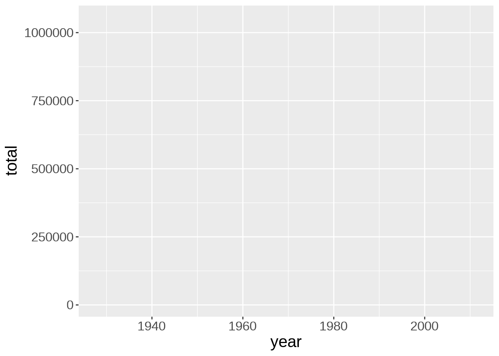
Onto this canvas, we can add “geoms” (geometrical objects) representing the data. The type of “geom” defines the type of representation (e.g. boxplot, histogram, bar chart).
To represent the data as a scatterplot, we use the geom_point() function:
ggplot(us_year_totals, aes(year, total)) +
geom_point()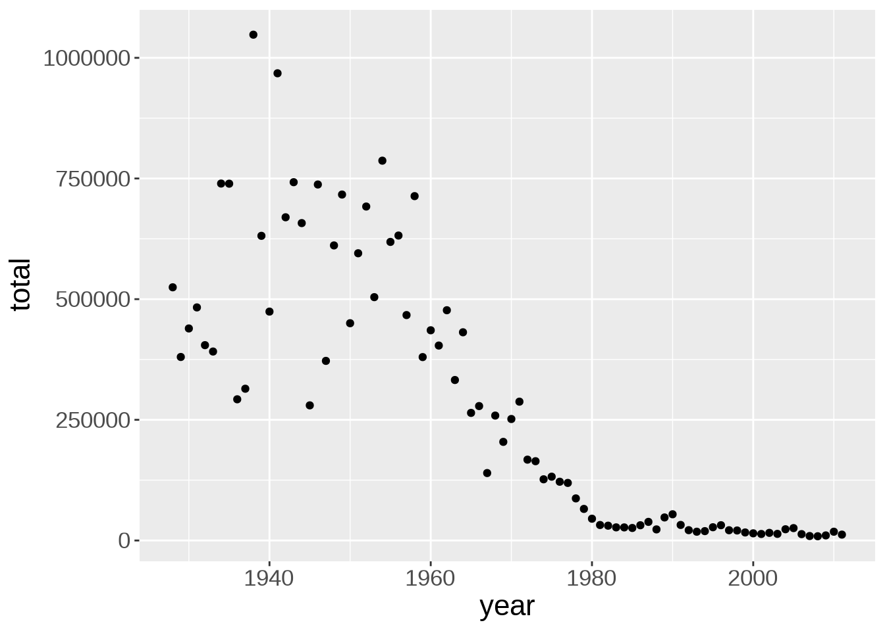
This immediately shows that the number of contagious infections in the US has declined sharply since the early 60s.
Multiple “geoms” can be added on top of each other. For instance, we can add a smoothed conditional means function with geom_smooth(). That will help us see patterns in the data:
ggplot(us_year_totals, aes(year, total)) +
geom_point() +
geom_smooth()`geom_smooth()` using method = 'loess' and formula = 'y ~ x'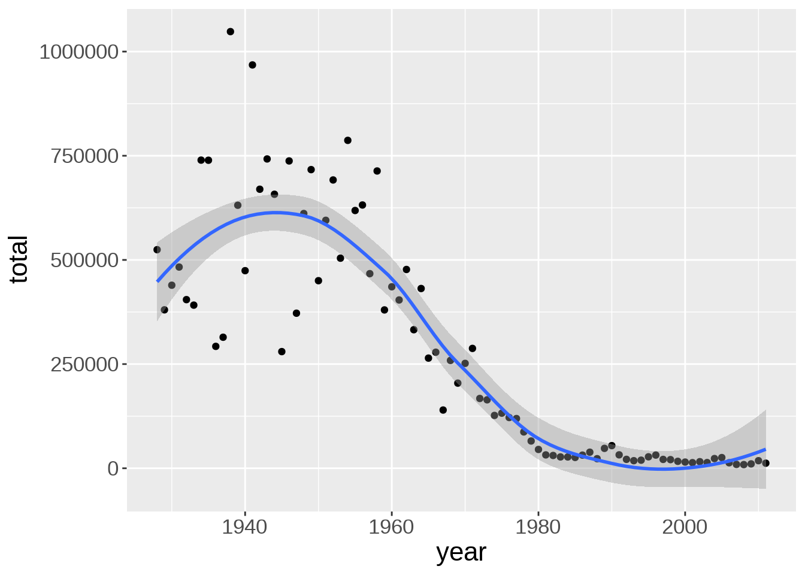
There is a bump of cases in the early 40s. Due to WWII maybe?
The default smoothing function uses the LOESS (locally estimated scatterplot smoothing) method, which is a nonlinear regression. We can change the method to a linear model:
ggplot(us_year_totals, aes(year, total)) +
geom_point() +
geom_smooth(method = lm)`geom_smooth()` using formula = 'y ~ x'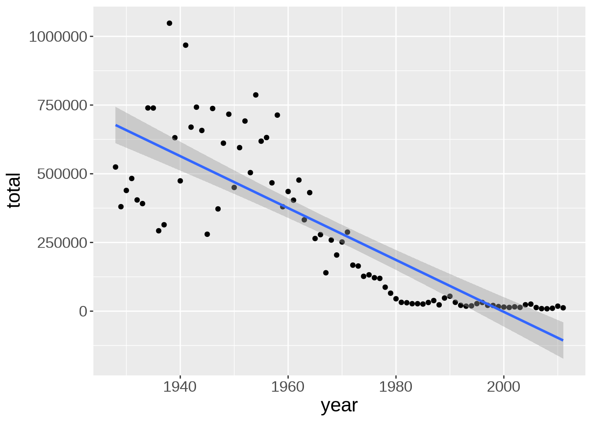
Line width, color, and whether or not the standard error (se) is shown can be customized:
ggplot(us_year_totals, aes(year, total)) +
geom_point() +
geom_smooth(
method = lm,
se = FALSE,
color = "#999999",
linewidth = 0.5
)`geom_smooth()` using formula = 'y ~ x'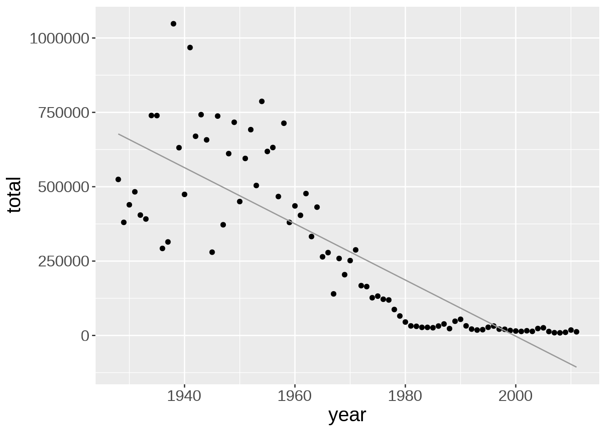
So far, we have pooled the data for all diseases together, but maybe different diseases show different trends.
Let’s create a new data frame with the totals per year and per disease so that we can create plots with more information:
us_year_disease_totals <- us_contagious_diseases |>
group_by(year, disease) |>
summarise(total = sum(count), .groups = 'drop')
head(us_year_disease_totals)# A tibble: 6 × 3
year disease total
<dbl> <fct> <dbl>
1 1928 Measles 483337
2 1928 Polio 4756
3 1928 Smallpox 36470
4 1929 Measles 339061
5 1929 Polio 2746
6 1929 Smallpox 38389Now we can use a different colour for each disease:
ggplot(us_year_disease_totals, aes(year, total)) +
geom_point(aes(color = disease))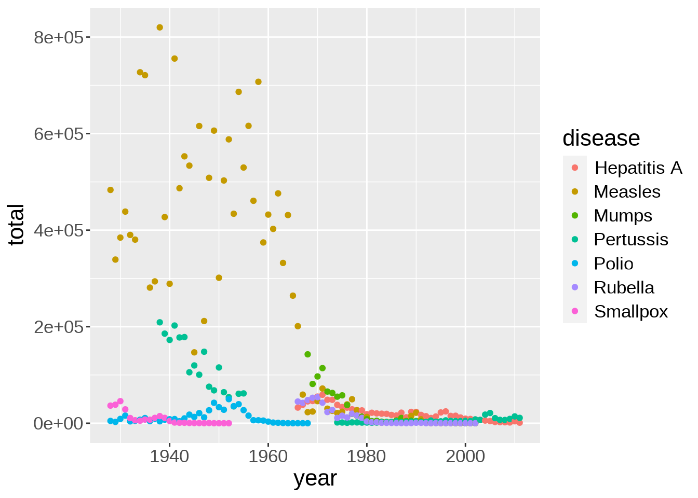
This shows how prevalent measles was until the 70s.
When plotting quickly to understand the data, aesthetics don’t matter. If you want to produce plots for publications or presentations, of course you should then spend some time tweaking their style and readability.
Many colour scales exist. scale_color_brewer(), based on color brewer 2.0, is one of many methods to change the color scale. Here is the list of available scales for this particular method:

When choosing a colour scale, it is very important to remember that various forms of colour blindness are common. Try to choose distinctive colours. Some palettes are specifically designed to work well for everyone.
Here, let’s try the Dark2 palette:
ggplot(us_year_disease_totals, aes(year, total)) +
geom_point(aes(color = disease)) +
scale_color_brewer(palette = "Dark2")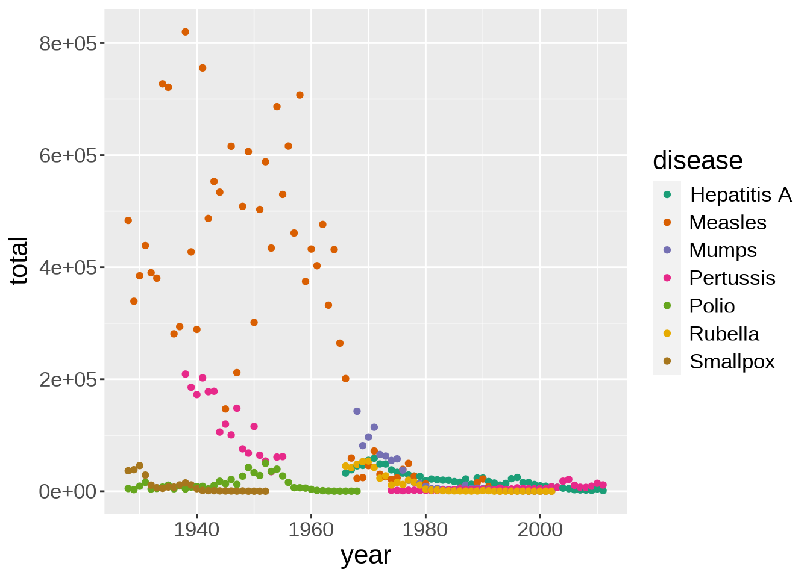
Let’s improve our axes labels and legend and add a title to the plot:
ggplot(us_year_disease_totals, aes(year, total)) +
geom_point(aes(color = disease)) +
scale_color_brewer(palette = "Dark2") +
labs(
title = "Infectious diseases in the US",
x = "Year",
y = "Number of cases",
color = "Diseases"
)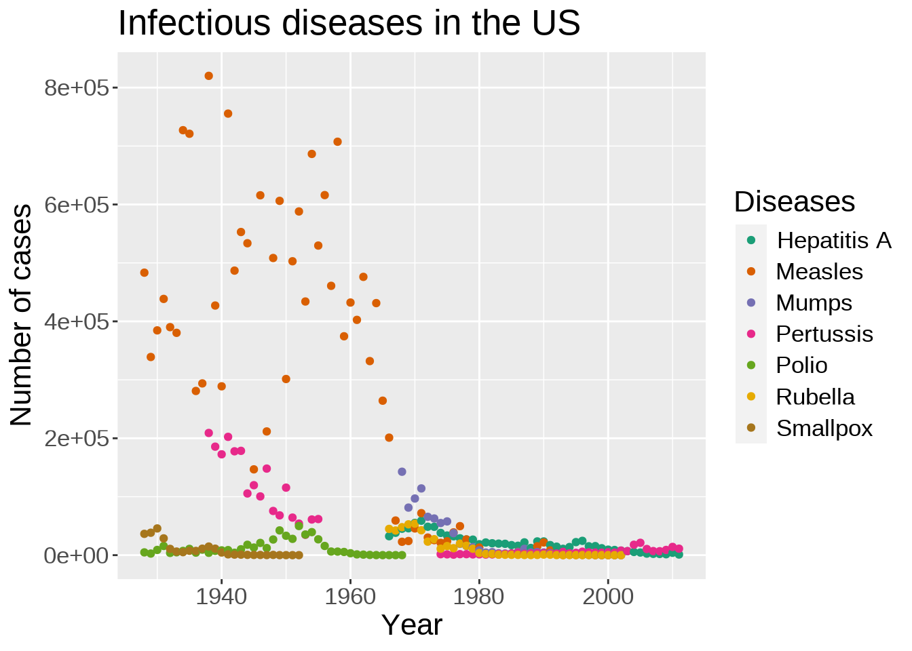
ggplot2 comes with a number of preset themes.
Edward Tufte developed, amongst others, the principle of data-ink ratio which emphasizes that ink should be used primarily where it communicates meaningful messages. It is indeed common to see charts where more ink is used in labels or background than in the actual representation of the data.
The default ggplot2 theme could be criticized as not following this principle. Let’s change it:
ggplot(us_year_disease_totals, aes(year, total)) +
geom_point(aes(color = disease)) +
scale_color_brewer(palette = "Dark2") +
labs(
title = "Infectious diseases in the US",
x = "Year",
y = "Number of cases",
color = "Diseases"
) +
theme_classic()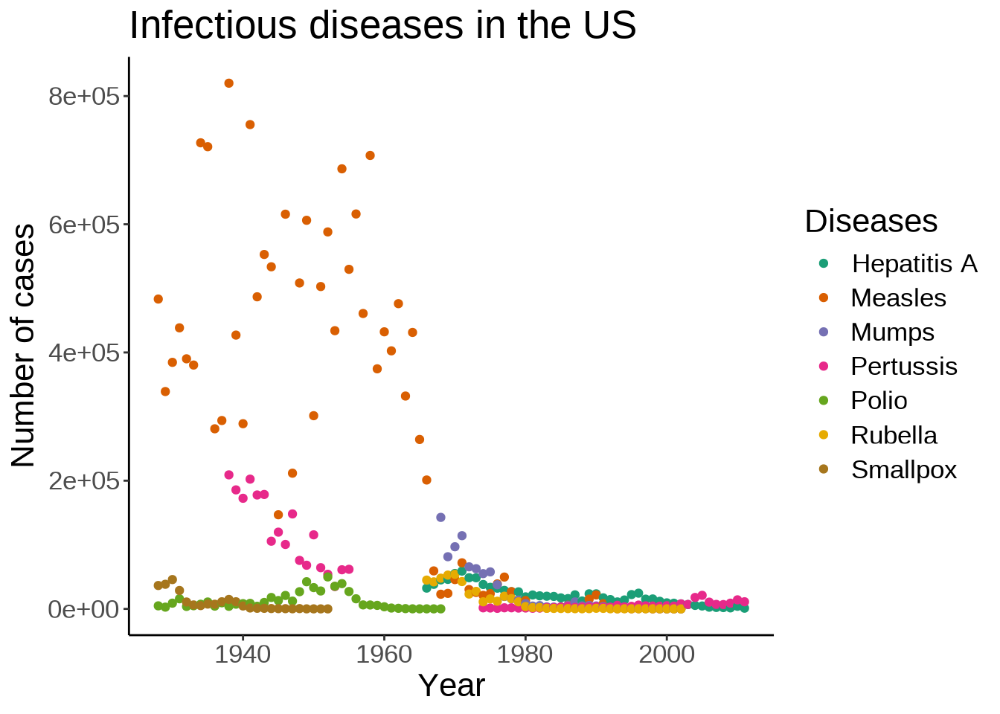
The theme() function allows to tweak the theme in any number of ways. For instance, what if we don’t like the default position of the title and we would rather have it centered?
ggplot(us_year_disease_totals, aes(year, total)) +
geom_point(aes(color = disease)) +
scale_color_brewer(palette = "Dark2") +
labs(
title = "Infectious diseases in the US",
x = "Year",
y = "Number of cases",
color = "Diseases"
) +
theme_classic() +
theme(plot.title = element_text(hjust = 0.5))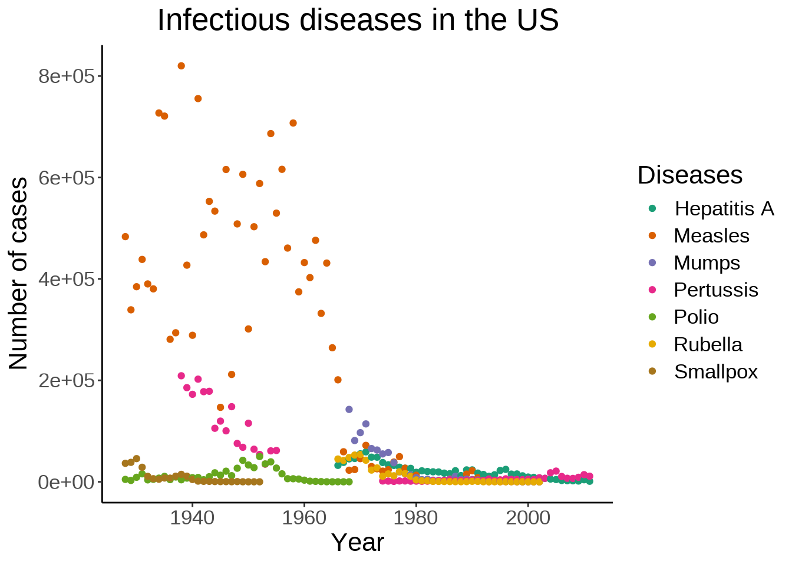
We can also move the legend to give more space to the actual graph:
ggplot(us_year_disease_totals, aes(year, total)) +
geom_point(aes(color = disease)) +
scale_color_brewer(palette = "Dark2") +
labs(
title = "Infectious diseases in the US",
x = "Year",
y = "Number of cases",
color = "Diseases"
) +
theme_classic() +
theme(plot.title = element_text(hjust = 0.5), legend.position = "bottom")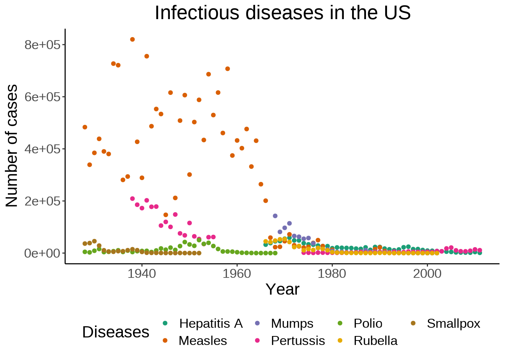
Instead of plotting the data for all diseases on a single graph, we can create facets:
ggplot(us_year_disease_totals, aes(year, total)) +
geom_point(aes(color = disease), show.legend = FALSE) +
scale_color_brewer(palette = "Dark2") +
labs(
title = "Infectious diseases in the US",
x = "Year",
y = "Number of cases"
) +
facet_wrap(~ disease) +
theme(plot.title = element_text(hjust = 0.5))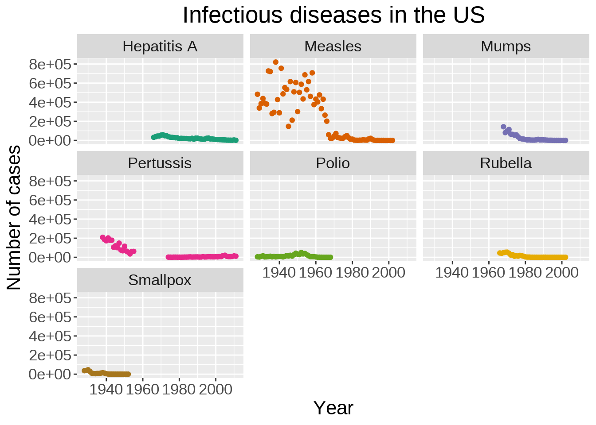
Plots can be saved to file thanks to the ggsave() function from ggplot2.
Let’s save our last plot:
ggsave("us_infectious_diseases.png")By default, ggsave() saves the last plot and guesses the file type from the file name extension. Arguments exist to select another plot to save to file, set the height and width, the resolution, add a background, etc. See ?ggsave for a list of options.
Thanks to its popularity, ggplot2 has seen a proliferation of packages extending its capabilities. A full list can be found here.